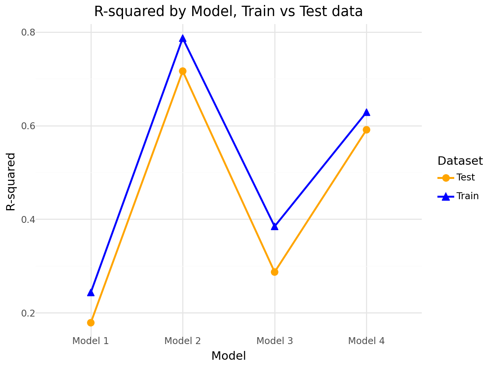
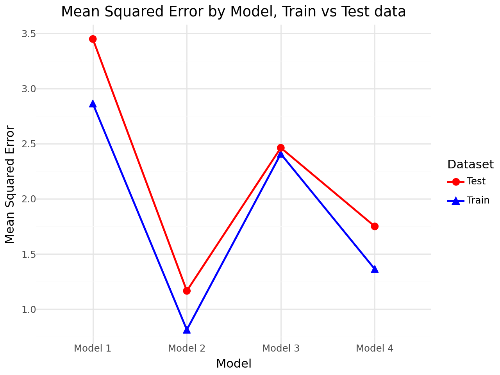

Import the Palmer Penguins dataset and print out the first few rows.
Suppose we want to predict bill_depth_mm using the other variables in the dataset.
Dummify all variables that require this.
# !pip install palmerpenguins
Requirement already satisfied: palmerpenguins in /usr/local/lib/python3.10/dist-packages (0.1.4)
Requirement already satisfied: pandas in /usr/local/lib/python3.10/dist-packages (from palmerpenguins) (2.2.2)
Requirement already satisfied: numpy in /usr/local/lib/python3.10/dist-packages (from palmerpenguins) (1.26.4)
Requirement already satisfied: python-dateutil>=2.8.2 in /usr/local/lib/python3.10/dist-packages (from pandas->palmerpenguins) (2.8.2)
Requirement already satisfied: pytz>=2020.1 in /usr/local/lib/python3.10/dist-packages (from pandas->palmerpenguins) (2024.2)
Requirement already satisfied: tzdata>=2022.7 in /usr/local/lib/python3.10/dist-packages (from pandas->palmerpenguins) (2024.2)
Requirement already satisfied: six>=1.5 in /usr/local/lib/python3.10/dist-packages (from python-dateutil>=2.8.2->pandas->palmerpenguins) (1.16.0)
from palmerpenguins import load_penguinsimport pandas as pd
penguins = load_penguins()penguins.head()
species
island
bill_length_mm
bill_depth_mm
flipper_length_mm
body_mass_g
sex
year
0
Adelie
Torgersen
39.1
18.7
181.0
3750.0
male
2007
1
Adelie
Torgersen
39.5
17.4
186.0
3800.0
female
2007
2
Adelie
Torgersen
40.3
18.0
195.0
3250.0
female
2007
3
Adelie
Torgersen
NaN
NaN
NaN
NaN
NaN
2007
4
Adelie
Torgersen
36.7
19.3
193.0
3450.0
female
2007
penguins = pd.get_dummies(penguins)
Let’s use the other variables to predict bill_depth_mm. Prepare your data and fit the following models on a training dataset subset of the entire dataset:
Four different models, each containing a different set of predictor variables
Create a plot like the right plot of Fig 1. in our Model Validation chapter with the training and test error plotted for each of your four models.
Which of your models was best?
Testing models with different number of parameters
# Step 1. Import packages and clean the data - dropnaimport sklearnimport numpy as npfrom sklearn.linear_model import LinearRegression # use LR for nowfrom sklearn.metrics import r2_score, mean_squared_errorfrom sklearn.model_selection import train_test_split
# cleaning the datapenguins = penguins.dropna()
MODELS
Model 1: bill_length_mm, body_mass_g
# defining variables of the modelX = penguins[["bill_length_mm", "body_mass_g"]]y = penguins["bill_depth_mm"]
# shortcut name for the modellr = LinearRegression()
# splitting the data into train and test datasetsX_train, X_test, y_train, y_test = train_test_split(X, y, test_size=0.25)
# training the modelm1 = lr.fit(X_train, y_train)
m1.score(X_train, y_train)
0.24337455071002922
# predicting Y based on training dataset X_trainY_train_pred_m1 = m1.predict(X_train)
# R-squared and MSE for Y_train_predr2_m1_train = r2_score(y_train, Y_train_pred_m1)mse_m1_train = mean_squared_error(y_train, Y_train_pred_m1)
# testing the modelY_test_pred_m1 = m1.predict(X_test)
# R-squared and MSE for Model 1:r2_m1_test = r2_score(y_test, Y_test_pred_m1)mse_m1_test = mean_squared_error(y_test, Y_test_pred_m1)
print(f"R-squared M1 train: {r2_m1_train}")print(f"MSE LR train: {mse_m1_train}")
R-squared M1 train: 0.24337455071002922
MSE LR train: 2.8630584160330788
print(f"R-squared M1 test: {r2_m1_test}")print(f"MSE LR test: {mse_m1_test}")
R-squared M1 test: 0.1787199341114165
MSE LR test: 3.4487155660246365
Model 2: bill_length_mm, species
# defining variables of the modelX2 = penguins[["bill_length_mm", "species_Adelie", "species_Chinstrap", "species_Gentoo"]]y = penguins["bill_depth_mm"]
# splitting the data into train and test datasetsX_train, X_test, y_train, y_test = train_test_split(X2, y, test_size=0.25)
# training the modelm2 = lr.fit(X_train, y_train)
m2.score(X_train, y_train)
0.7869869996891681
# predicting Y based on training dataset X_trainY_train_pred_m2 = m2.predict(X_train)
# R-squared and MSE for Y_train_predr2_m2_train = r2_score(y_train, Y_train_pred_m2)mse_m2_train = mean_squared_error(y_train, Y_train_pred_m2)
# testing the modelY_test_pred_m2 = m2.predict(X_test)
# R-squared and MSE for Model 2:r2_m2_test = r2_score(y_test, Y_test_pred_m2)mse_m2_test = mean_squared_error(y_test, Y_test_pred_m2)
Model Dataset R-squared
0 Model 1 Train 0.243375
1 Model 1 Test 0.178720
2 Model 2 Train 0.786987
3 Model 2 Test 0.716564
4 Model 3 Train 0.384634
5 Model 3 Test 0.287052
6 Model 4 Train 0.628723
7 Model 4 Test 0.591150
Model Dataset MSE
0 Model 1 Train 2.863058
1 Model 1 Test 3.448716
2 Model 2 Train 0.812289
3 Model 2 Test 1.164935
4 Model 3 Train 2.407079
5 Model 3 Test 2.462190
6 Model 4 Train 1.362338
7 Model 4 Test 1.749764
Plotting of models results
# Visualziation of the results # assisted with ChatGPTfrom plotnine import ggplot, aes, geom_point, geom_line, labs, theme_minimal, scale_color_manual, facet_wrap
# Plot of Train & Test R-squared for each Model(ggplot(r_squared_results, aes(x='Model', y='R-squared', color='Dataset', shape='Dataset'))+ geom_point(aes(group='Model'),size=3)+ geom_line(aes(group='Dataset'), size=1)+ labs(title='R-squared by Model, Train vs Test data', x='Model', y='R-squared')+ theme_minimal()+ scale_color_manual(values={'Train': 'blue', 'Test': 'orange'}))

# MSE Plot(ggplot(mse_results, aes(x='Model', y='MSE', color='Dataset', shape='Dataset'))+ geom_point(aes(group='Dataset'),size=3)+ geom_line(aes(group='Dataset'), size=1)+ labs(title='Mean Squared Error by Model, Train vs Test data', x='Model', y='Mean Squared Error')+ theme_minimal()+ scale_color_manual(values={'Train': 'blue', 'Test': 'red'}))

Answer:
Based on the R-squared and MSE results of the four tested models (also visible on the plots) - Model 2 (bill_length_mm, species), appears to be the most efficient and robust in predicting the bill_depth of a penguin from the dataset. This model scores the highest R-squared on both train and (even higher) on test data, while has the lowest MSE on both data samples. Model 4 is a runner-up with slightly worse results on both metrics and data samples. While Model 1 and 3 performed the lowest on according to these metrics.